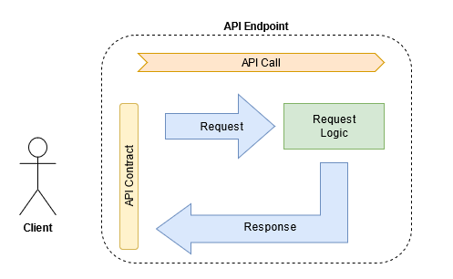

Definition of API Requirements v2
Requirements definition for APIs is not a standard part of the Business Analysis activities in software development. Usually, API design was a single responsibility of a system architect or a developer, considering implementation subject matter experts.
During my BA career, I had to deal with API-specific requirements. I realized that the API layer has stakeholders (aka consumers) who have their needs related to APIs provided by a system-of-interest. And those needs should be analyzed and translated into requirements.
The goal of this essay is to give an introduction to the definition of API requirements for my fellow Business Analysts, Product Owner, and Product Managers. I will not discuss technical details and cover API types (REST, RPC, GraphQL, etc.). There are a lot of experts who have done that and did a great job.
I will focus on general things, looking at API from the requirements perspective in general. Also, I have mostly worked with RESTful API, which impacts my view on some things.
I will not cover a case when you need to integrate with someone's API. That is part of another topic.
When you need requirements for API
You don't need to provide any API-specific requirements when there is only one API consumer of your service, and this consumer is a front-end or another service developed within one team.
In this case, an API reflects a feature available in the system. And there is only one way how a consumer can use it. You can define a user story describing acceptance criteria with functional, quality (non-functional) requirements and attach UI wireframes. That will be enough for a developer to design and produce an API covering a particular feature.
But when more parties consume your APIs, you should consider their needs. We can split those parties into two big categories:
- Different teams within your organization.
- Consumers outside your organization.
They need your API to reach their business goals despite their apparent differences. Each party has its context of usage and a particular integration approach. Thus you need to consider them as stakeholders and address their concerns to provide a great customer experience.
You need to draw a clear line: API requirements are not about introducing new or improving current functionality. API is a door to access the functionality, which can be opened in different ways.
Terms & Definitions
Let us clarify some concepts and align on the terms used in the text.
API: translates as "Application Programmable Interface," but that does not give you a key without a Computer Science degree. The main word for my Bachelor of Arts fellows is "Interface." For an analogy, your mouth, tongue, and lungs are verbal communication interfaces.
API itself is an extensive term. For now, we need to understand that we are talking about a gateway through which your service communicates with the outside world.
API endpoint: a single instance of API with a unique address (URL). Sending a required input to that URL triggers some command within your system and returns an output about a successful result or failure.
Example: POST https://ecomplatform/api/v1/purchases/{purchaseId}/cancel
API call: sending a request to an API endpoint and getting a response.
Client: a general term to identify someone or something calling your API.
API Definition
Why & What
As usual, we need to understand the following things to succeed with the requirements:
- Why do we need this?
- What will it do?
The second question looks like an easy one. API is about passing commands to manipulate data objects of some Entities. The primary activities are Create, Read, Update, and Delete (CRUD) operations, but the devil is in the details.
For example, in our e-commerce system, there is the "Purchase" Entity and a command "Cancel" available for an Entity object. Our API endpoint should cancel a previously made purchase. In a simple view, we need the following:
- make sure how we identify a right Purchase to cancel;
- how we proceed with the cancellation.
Cancellation can mean an actual deletion of that Purchase (bad idea) or an update of a Purchase status with relevant details (good idea). You should be aware of the business logic. Changing a state of an object might trigger a chain of information updates elsewhere in the system, introducing the request logic.
The "Why" question is more complex. A particular API call can participate in several use cases, each having its context. You might cover every context with one API endpoint or craft the one to rule them all. That is a question of implementation (and risks). But you would better know those use cases.
Handling multiple contexts of API usage, even without one organization, is difficult. But when API reaches the outside world, it is almost impossible to consider every use case in which it might be included. You can define the rules, provide some documentation, and hope that will work. Just be prepared for problems where no one expects them to occur.
Prerequisites
The next step is to define what prerequisite of an API call - authentication and authorization:
- Authentication is about verifying clients and allowing them to communicate with your service.
- Authorization is about permission to enable specific clients to make particular API requests.
Usually, an Authentication approach applies to all API endpoints in an instance rather than a specific one. I omit to describe all existing approaches as it is a topic for another essay. For now, let's consider that some API consumers may require a particular method of authentication based on their security restrictions.
Permissions can be managed on the system and the API layer. You can define API endpoints doing the same thing but with different business logic or maintain one which considers different roles. Let's return to our e-com example.
Canceling a Purchase by a Customer and canceling a Purchase by an Admin are different scenarios. Here we have the same action but with two different contexts. Admin may skip some validation steps required for a Customer in that business logic so that they can cancel a Customer's Purchase in a simplified way. When designing an API endpoint, you need to make sure that dangerous power will be used only by Admins.
API Call
Now we are ready to define our API endpoint considering the following:
- API Contract
- Request logic

API Contract
API contract is an agreement about expected input and outcome between you and the Clients. The Contract is strictly formalized, and clients agree to follow it when they start using your API. The API owner takes responsibility for maintaining the consistency of the Contract.
For input, a Client provides a set of required and optional parameters. The Required parameters usually identify an object or a group of homogeneous objects to access or modify them. The optional alters an expected response by reducing the amount of returned data, for example.
The Request is also context-bound whether you expect your API to be part of the API request chain or standalone. For example, you need to retrieve a single Purchase. So you need to define an ID to load a Purchase object. Usually, the system provides several identifiers for the same things in different contexts. Let us assume a Purchase entity has a human-readable Business ID and a System ID as a hashcode.
Before making a decision, we need to understand how a Client will obtain that ID to make a call. If any other API endpoint does not return the System ID, why would we expect our clients to provide it?
Or does the system identify a Purchase directly by the Business ID? We can quickly consider a workaround by making a Purchase search request with a Business ID, extracting a System ID from a found Purchase, and making a call for Purchase details. But now we have a request logic instead of a simple call.
For a Response, an API endpoint returns some data. That can be all information about a data object or just a message with a status. There are successful and failed responses. The latter usually returns an error as a code and some message about what has gone wrong.
A Response deals with an API model. Understanding that a data model operated by API is not equal to the data model stored in your database is essential. Your API may return a reduced amount of information, skipping purely technical attributes and some sensitive data.
Providing expected outcomes is also a part of the Contract. The information should correspond to the client's goals and desired format, even if it differs from the data in the system. That can be localization to a different language, another date format, currency conversion, combining data objects of various entities, adapting data from third-party providers, etc. In this case, a BA needs to deliver a data mapping deliverable.
Request Logic
The API request logic may be:
- Simple: one call to the Back-end with CRUD operation to a data object of a single Entity.
- Composite: a chain of calls to one or several Back-end services with several Entities involved.
In the latter case, you should "orchestrate" a consecutive or parallel set of API calls. As an alternative, you can expose those calls separately and provide the guideline of how a Client needs to call them.
For orchestration, maintaining overall performance and sustainability becomes extremely important. The more steps we have in a sequence, the probability of failure is higher, considering different "bad" scenarios such as prolonged response time, messy data, downtime, etc.
It is OK when such composite requests consist of 2-3 data retrieval calls. The "heavy" requests are too risky and non-maintainable in the mid and long term. When you have more calls with updating data in different parts of the system, you need to revisit the scenario and find another way. It is, without doubt, a technical debt in its essence.
Outro
It is an introduction to such a vast topic as API, so many details have remained overboard. I hope we will cover them in the following materials. Stay tuned!
P.S. This a 2nd revision of my first published post. Please read this version, not the original. I will keep it more for nostalgic reasons
Take care,
Ilya
Image by Gerd Altmann from Pixabay